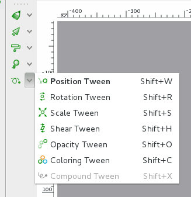

O tweening de rotação do Tupi permite gerar frames automaticamente com alterações na rotação de um objeto.
Neste exercício vamos utilizar as imagens vetoriais carro e roda (adaptadas da imagem disponível em OpenClipart) e cenario (adaptada da imagem disponível em OpenClipart como fundo.
1. Comece por criar uma pasta para o seu projeto e por criar um projeto tupi.
2. Importe as imagens disponibilizadas para o projeto.
3. Ative o Dynamic BG Mode e importe a imagem de fundo para o palco. Redimensione de forma a esta ocupar o fundo. Neste exercício, vamos manter as pré-definições na Direction e velocidade (Shift Lenght). O carro vai deslocar-se da esquerda para a direita.
4. Ative o Frames Mode e desenhe um retângulo preto na Frame 1. Este retângulo irá servir de estrada.
5. Importe a base do carro e posicione a mesma.
6. Importe a roda duas vezes, redimensione e posicione as mesmas.
7. Ative a ferramenta de Rotation Tween. Introduza um nome para o tween e clique no sinal + para criar o tween.
8. Selecione o objeto a que vai aplicar o tween. Clique em cima da primeira roda, esta deverá ficar com uma moldura tracejada. Clique em Set Properties para definir as propriedades do tween.
9. Vamos criar uma animação de 4 segundos (96 frames), rotação no sentido do relógio porque o carro vai deslocar-se para a direita.
Depois de definir as propriedades, clique no botão de gravar para a gerar as frames.
De seguida, clique na seta que está ao lado do botão de gravar para fechar as propriedades da tween criada.
10. Crie uma nova tween. Aplique a nova tween na segunda roda mas siga as mesmas propriedades: rotação no sentido do relógio e 96 frames.
11. As rodas e o fundo já estão animados mas o carro e a estrada desaparecem... na realidade, só existem na frame 1. Podemos resolver isto de duas formas: introduzir o corpo do carro e a estrada como Static BG ou resolver o problema com um truque através de tweening. Vamos utilizar o truque!
Crie um tween de opacidade para a estrada. Este tween tem 96 frames e a opacidade inicial e final são ambas de 1. Ou seja, não vai ser visível nenhuma alteração mas vão ser criadas 96 frames com a estrada...
12. Repita o truque para o corpo do carro...
13. Agora tem 96 frames com fundo a deslocar-se + duas rodas a rodar + a estrada + o carro
Em filme...
(Link para ficheiro aqui)
SUGESTÃO: Edite o fundo dinâmico e aumente o Shift Length para 50. Edite cada uma das tweens de rotação e aumente a velocidade também para 50 :)
{kind=link}
{kind=link}
{kind=link}